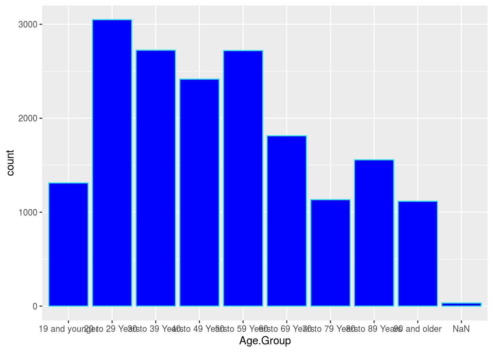
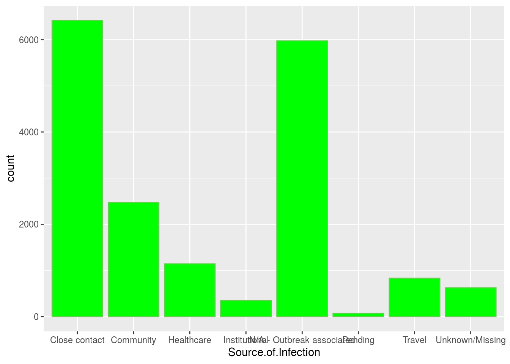

Young people between the ages of 20 and 29 have the highest number of infections
As the distribution provided here, the graph follows a right-skewed distribution and it does not looks like a symmetric distribution. The bins shows that most of the people who get infected is the age group around 20 and 29 years old. These people got highest number of infecting by the virus.
####Instal Data
library(opendatatoronto)
library(dplyr)
##
## Attaching package: 'dplyr'
## The following objects are masked from 'package:stats':
##
## filter, lag
## The following objects are masked from 'package:base':
##
## intersect, setdiff, setequal, union
# get package
package <- show_package("64b54586-6180-4485-83eb-81e8fae3b8fe")
package
## # A tibble: 1 x 10
## title id topics civic_issues excerpt dataset_category num_resources formats
## <chr> <chr> <chr> <chr> <chr> <chr> <int> <chr>
## 1 COVI… 64b5… <NA> <NA> <NA> <NA> 1 <NA>
## # … with 2 more variables: refresh_rate <chr>, last_refreshed <date>
# get all resources for this package
resources <- list_package_resources("64b54586-6180-4485-83eb-81e8fae3b8fe")
# identify datastore resources; by default, Toronto Open Data sets datastore resource format to CSV for non-geospatial and GeoJSON for geospatial resources
datastore_resources <- filter(resources, tolower(format) %in% c('csv', 'geojson'))
# load the first datastore resource as a sample
DATA <- filter(datastore_resources, row_number()==1) %>% get_resource()
DATA
## # A tibble: 17,872 x 18
## `_id` Assigned_ID `Outbreak Assoc… `Age Group` `Neighbourhood … FSA
## <int> <int> <chr> <chr> <chr> <chr>
## 1 143647 1 Sporadic 50 to 59 Y… Willowdale East M2N
## 2 143648 2 Sporadic 50 to 59 Y… Willowdale East M2N
## 3 143649 3 Sporadic 20 to 29 Y… Parkwoods-Donal… M3A
## 4 143650 4 Sporadic 60 to 69 Y… Church-Yonge Co… M4W
## 5 143651 5 Sporadic 60 to 69 Y… Church-Yonge Co… M4W
## 6 143652 6 Sporadic 50 to 59 Y… Newtonbrook West M2R
## 7 143653 7 Sporadic 80 to 89 Y… Milliken M1V
## 8 143654 8 Sporadic 60 to 69 Y… Willowdale West M2N
## 9 143655 9 Sporadic 50 to 59 Y… Willowdale East M2N
## 10 143656 10 Sporadic 60 to 69 Y… Henry Farm M2J
## # … with 17,862 more rows, and 12 more variables: `Source of Infection` <chr>,
## # Classification <chr>, `Episode Date` <chr>, `Reported Date` <chr>, `Client
## # Gender` <chr>, Outcome <chr>, `Currently Hospitalized` <chr>, `Currently in
## # ICU` <chr>, `Currently Intubated` <chr>, `Ever Hospitalized` <chr>, `Ever
## # in ICU` <chr>, `Ever Intubated` <chr>
glimpse(DATA)
## Rows: 17,872
## Columns: 18
## $ `_id` <int> 143647, 143648, 143649, 143650, 143651, 1436…
## $ Assigned_ID <int> 1, 2, 3, 4, 5, 6, 7, 8, 9, 10, 11, 12, 13, 1…
## $ `Outbreak Associated` <chr> "Sporadic", "Sporadic", "Sporadic", "Sporadi…
## $ `Age Group` <chr> "50 to 59 Years", "50 to 59 Years", "20 to 2…
## $ `Neighbourhood Name` <chr> "Willowdale East", "Willowdale East", "Parkw…
## $ FSA <chr> "M2N", "M2N", "M3A", "M4W", "M4W", "M2R", "M…
## $ `Source of Infection` <chr> "Travel", "Travel", "Travel", "Travel", "Tra…
## $ Classification <chr> "CONFIRMED", "CONFIRMED", "CONFIRMED", "CONF…
## $ `Episode Date` <chr> "2020-01-22", "2020-01-21", "2020-02-05", "2…
## $ `Reported Date` <chr> "2020-01-23", "2020-01-23", "2020-02-21", "2…
## $ `Client Gender` <chr> "FEMALE", "MALE", "FEMALE", "FEMALE", "MALE"…
## $ Outcome <chr> "RESOLVED", "RESOLVED", "RESOLVED", "RESOLVE…
## $ `Currently Hospitalized` <chr> "No", "No", "No", "No", "No", "No", "No", "N…
## $ `Currently in ICU` <chr> "No", "No", "No", "No", "No", "No", "No", "N…
## $ `Currently Intubated` <chr> "No", "No", "No", "No", "No", "No", "No", "N…
## $ `Ever Hospitalized` <chr> "No", "Yes", "No", "No", "No", "No", "No", "…
## $ `Ever in ICU` <chr> "No", "No", "No", "No", "No", "No", "No", "N…
## $ `Ever Intubated` <chr> "No", "No", "No", "No", "No", "No", "No", "N…
library(tidyverse)
## ── Attaching packages ────────────────────────────────────────── tidyverse 1.3.0 ──
## ✓ ggplot2 3.3.2 ✓ purrr 0.3.4
## ✓ tibble 3.0.3 ✓ stringr 1.4.0
## ✓ tidyr 1.1.2 ✓ forcats 0.5.0
## ✓ readr 1.3.1
## ── Conflicts ───────────────────────────────────────────── tidyverse_conflicts() ──
## x dplyr::filter() masks stats::filter()
## x dplyr::lag() masks stats::lag()
Episode.Date=DATA$`Episode Date`
Age.Group=DATA$`Age Group`
Source.of.Infection=DATA$`Source of Infection`
ggplot(data=DATA, aes(x = Age.Group)) + geom_histogram(color=5, fill='blue', bins = 10, stat = 'count')
## Warning: Ignoring unknown parameters: binwidth, bins, pad
The Ways Of Getting Infected
There are many ways of getting infection by the virus, such as getting close contact, or spears by the community, healthcare issues, institutional facts … etc. Let’s illustrate the reasons and find some trend of getting infection.
ggplot(data=DATA, aes(x = Source.of.Infection)) + geom_histogram(color=83, fill='green', bins = 10, stat = 'count')
## Warning: Ignoring unknown parameters: binwidth, bins, pad As the graph shows, the thing that we can see clearly is the the close contact and the outbreak associated becomes plays the majority of ways of getting infected. The two ways have around 6000 of people separately. There are also many people get infected by the other reason of community as around 2500 people. The graph is not symmetric either does not like to be following a normal distribution.